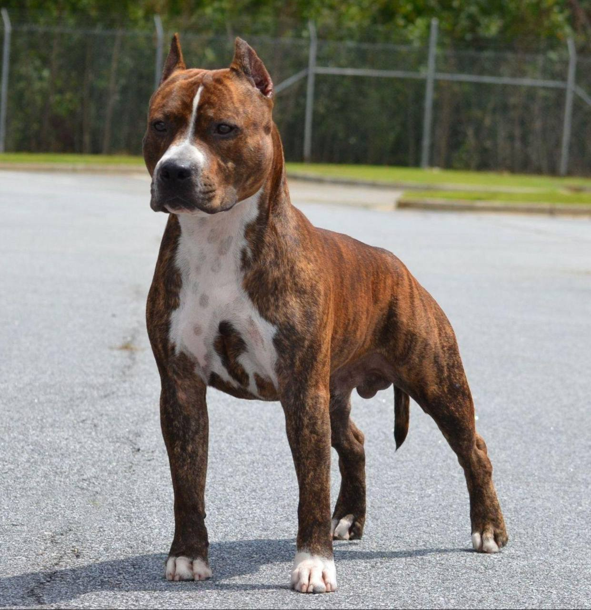

Американский стаффордширский терьер

Происхождение: США
Размер: Крупные (рост: 43–48 см, вес: 25–30 кг)
Характер: Смелые, энергичные, упрямые, преданные
Особенности: Сильные и выносливые, нуждаются в дрессировке. Короткая шерсть – уход минимален. Подходят для спорта
Здоровье: Сердечные заболевания, артрит